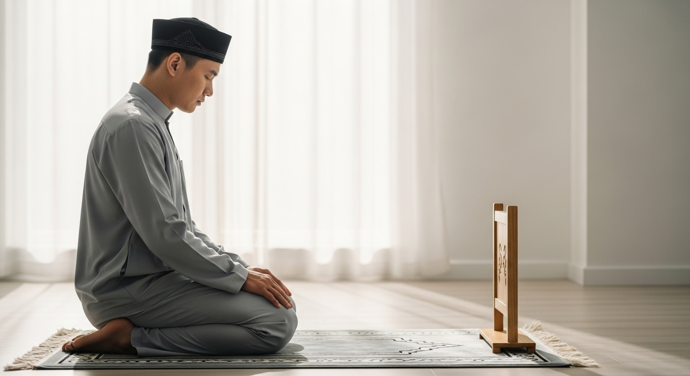
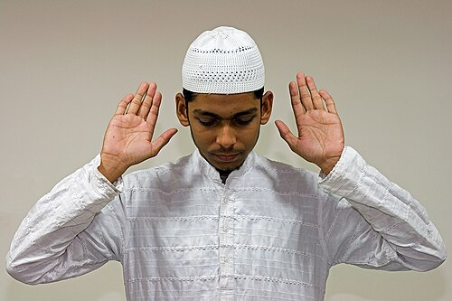
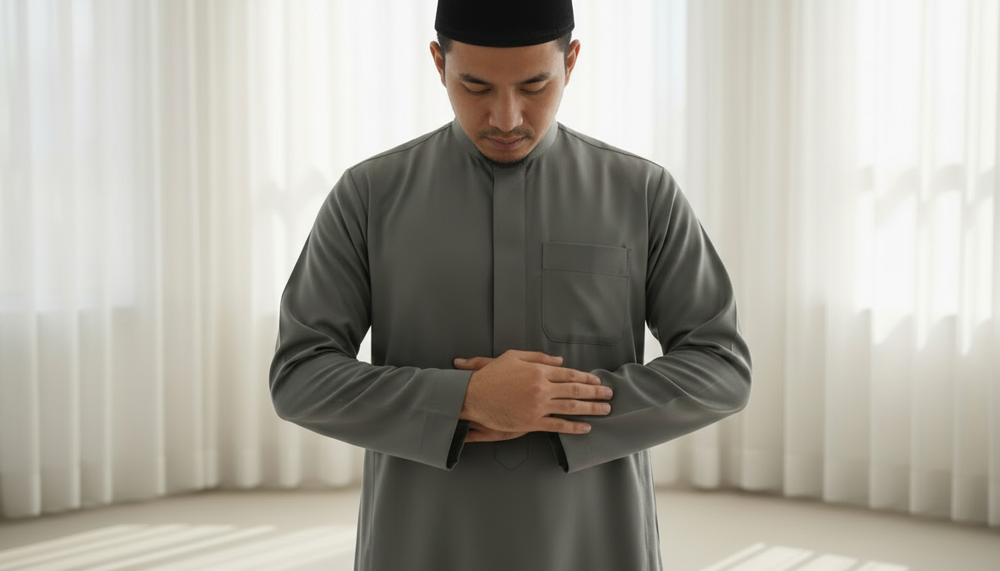
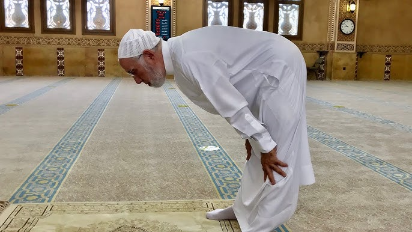
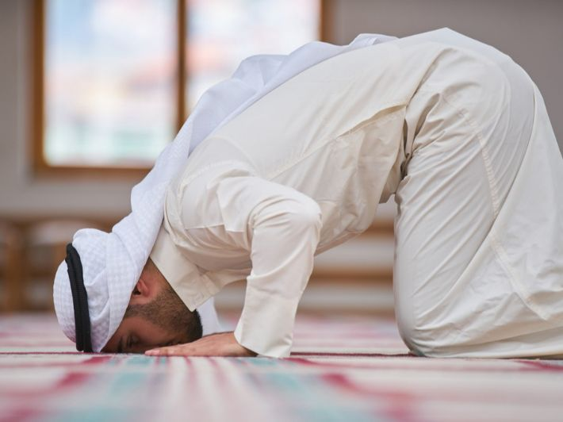
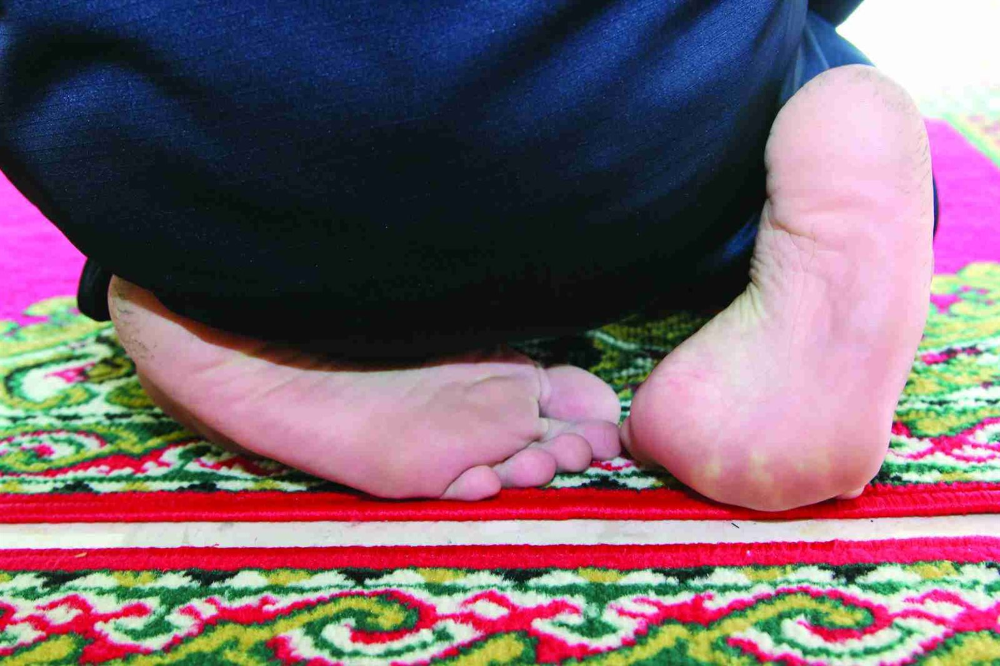

١. شروط وضوابط قبل الصلاة
قبل الوقوف بين يدي الله عز وجل، يجب التأكد من تحقق الشروط التالية:
- الوضوء أو الغسل: الطهارة من الحدث الأصغر والأكبر.
- ستر العورة: للرجل من السرة للركبة، وللمرأة كامل الجسد عدا الوجه والكفين.
- استقبال القبلة: التوجه نحو الكعبة المشرفة.
- اتخاذ سترة: (سنة) وضع شيء أمامك يمنع مرور الناس.

٢. وصف الصلاة خطوة بخطوة
تكبيرة الإحرام
تستقبل القبلة وتنوي بقلبك، ثم ترفع يديك حذو منكبيك أو أذنيك وتقول:

دعاء الاستفتاح وقراءة الفاتحة
تضع يدك اليمنى على اليسرى على الصدر، ثم تقرأ دعاء الاستفتاح سراً:
ثم الاستعاذة والبسملة، وقراءة سورة الفاتحة (ركن)، ثم ما تيسر من القرآن.

الركوع
تكبر ثم تركع، وتجعل ظهرك مستوياً وتضع يديك على ركبتيك مفرجة الأصابع وتقول (٣ مرات):

الرفع من الركوع
ترفع رأسك من الركوع قائلاً:
وبعد الاعتدال تقول:

السجود
تكبر وتسجد على أعضائك السبعة (الجبهة والأنف، الكفان، الركبتان، أطراف القدمين)، وتجافي مرفقيك عن جنبيك وتقول (٣ مرات):
ثم تدعو الله بما شئت، قال ﷺ: «أَقْرَبُ مَا يَكُونُ الْعَبْدُ مِنْ رَبِّهِ وَهُوَ سَاجِدٌ فَأَكْثِرُوا الدُّعَاءَ» — رواه مسلم.

الجلسة بين السجدتين
ترفع رأسك وتجلس مفترشاً رجلك اليسرى ناصباً اليمنى وتقول:

التشهد الأول
بعد السجدة الثانية من الركعة الثانية تجلس مفترشاً وتقرأ التشهد:
ثم تقوم للركعة الثالثة مكبراً. وفي الصلاة الثنائية (الفجر) تكمل بالصلاة الإبراهيمية.
التشهد الأخير والتسليم
بعد الركعة الأخيرة تجلس متورّكاً (تُخرج رجلك اليسرى من تحت اليمنى وتجلس على مقعدتك)، وتقرأ التشهد كاملاً ثم الصلاة الإبراهيمية:
ثم تستعيذ بالله من أربع قبل السلام:
ثم تسلم عن يمينك وعن شمالك قائلاً:
٣. أركان الصلاة وواجباتها
الأركان (١٤ ركناً)
لا تسقط عمداً ولا سهواً وتُبطل الصلاة بتركها:
- القيام مع القدرة
- تكبيرة الإحرام
- قراءة الفاتحة في كل ركعة
- الركوع
- الرفع من الركوع
- الاعتدال قائماً بعد الركوع
- السجود على الأعضاء السبعة
- الرفع من السجود
- الجلسة بين السجدتين
- الطمأنينة في جميع الأركان
- الترتيب بين الأركان
- التشهد الأخير
- الجلوس للتشهد الأخير
- التسليمتان
الواجبات (٨ واجبات)
تبطل بتركها عمداً، وتُجبر بسجود السهو إن تركت نسياناً:
- جميع التكبيرات عدا تكبيرة الإحرام
- قول: سمع الله لمن حمده (للإمام والمنفرد)
- قول: ربنا ولك الحمد (للكل)
- قول: سبحان ربي العظيم في الركوع (مرة)
- قول: سبحان ربي الأعلى في السجود (مرة)
- قول: رب اغفر لي بين السجدتين (مرة)
- التشهد الأول
- الجلوس للتشهد الأول
٤. مكروهات ومبطلات الصلاة
مكروهات (يُنقص الأجر)
- الالتفات اليسير لغير حاجة.
- العبث بالثياب أو البدن.
- تغطية الفم (اللثام).
- الصلاة بحضرة طعام يشتهيه.
- رفع البصر إلى السماء.
- التخصّر (وضع اليد على الخاصرة).
- السدل (إسدال الثوب بلا حاجة).
- الإقعاء (الجلوس على العقبين بين السجدتين).
- التثاؤب.
مبطلات (تجب الإعادة)
- الكلام المتعمد لغير مصلحة الصلاة.
- الضحك (القهقهة).
- الأكل والشرب عمداً.
- الحدث (انتقاض الوضوء).
- كشف العورة عمداً.
- استدبار القبلة عمداً.
- ترك ركن أو شرط عمداً.
- الحركة الكثيرة المتوالية لغير ضرورة.
٥. من سنن الصلاة
هذه أفعال يُثاب فاعلها ولا يُعاقب تاركها، وردت عن النبي ﷺ:
- رفع اليدين عند تكبيرة الإحرام وعند الركوع والرفع منه وعند القيام من التشهد الأول
- وضع اليد اليمنى على اليسرى على الصدر في القيام
- النظر إلى موضع السجود
- دعاء الاستفتاح
- التعوّذ والبسملة قبل الفاتحة
- قول «آمين» بعد الفاتحة
- قراءة سورة بعد الفاتحة في الركعتين الأوليين
- الجهر بالقراءة في الفجر والركعتين الأوليين من المغرب والعشاء
- الزيادة على المرة في تسبيح الركوع والسجود (السنة ثلاثاً)
- بسط الظهر في الركوع ووضع الكفين على الركبتين مفرجة الأصابع
- مجافاة المرفقين عن الجنبين في السجود ومباعدة البطن عن الفخذين
- جلسة الاستراحة (جلسة خفيفة بعد السجدة الثانية من الركعة الأولى والثالثة قبل القيام)
- الإشارة بالسبابة في التشهد وتحريكها عند الدعاء
- الافتراش في التشهد الأول والتورّك في التشهد الأخير
- الدعاء بعد الصلاة الإبراهيمية وقبل السلام
٦. أذكار بعد الصلاة
كان النبي ﷺ إذا سلّم يقول:
ثم يقول:
ثم التسبيح:
- سبحان الله (٣٣ مرة)
- الحمد لله (٣٣ مرة)
- الله أكبر (٣٣ مرة)
- ويتم المئة بقول: لا إله إلا الله وحده لا شريك له، له الملك وله الحمد وهو على كل شيء قدير
ويقرأ آية الكرسي وسورة الإخلاص والمعوذتين — رواه مسلم والنسائي.
٧. حديث النبي ﷺ
رواه البخاري